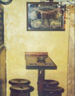
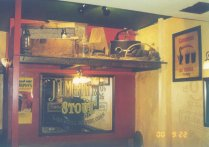

If you’ve ever passed through Cork city, chances are you’ll have seen the biggest pint in Ireland; to be precise, a mural of a pint of Guinness above the entrance to Gallagher’s Bar on MacCurtain St. which is literally unmissable. Geographically, the bar is situated on the corner of Bridge St and MacCurtain, just at the foot of the glorious St Patrick’s Hill (well it is). Gallagher’s Bar (named after one of Cork’s famous sons, blues guitarist Rory, who lived two doors up the street) is an old-style, traditional bar and is notable for several reasons. The summer sees nightly backpacker specials, Monday to Saturday, with live traditional sessions and drink promotions. These are the kind of events that make lugging a rucksack halfway around the world worthwhile (and the ideal place to make new friends, thereby securing accomodation for the next leg of your no-budget holiday).

The summer sees nightly backpacker specials, Monday to Saturday, with live traditional sessions and drink promotions. These are the kind of events that make lugging a rucksack halfway around the world worthwhile (and the ideal place to make new friends, thereby securing accomodation for the next leg of your no-budget holiday). These occasions are not of course restricted to backpackers - those carrying suitcases, and those with no luggage whatsoever are just as welcome. Gallagher’s also holds the distinction of having the smallest snug in Cork, which means that this is somewhere you’ll be very snug indeed (if you haven’t come across a snug before, you’re in for a treat - it’s a partitioned room next to the bar counter, perfect for retreating from private society if you don’t want to deal with the bustle of the main bar; maximum capacity, generally 5 people!).

Gallagher’s serve lunches every day of the week, the kind of hearty meals you need to combat the Irish weather, but that still won’t break the bank. But it’s the location that makes this such an attractive prospect, just around the corner from the excellent book and record shop Vibes and Scribes and down the street from Isaac’s Hotel, hostel and restaurant. Not to mention, a stone’s throw from the train station, making it particularly handy for a sneaky pint before you depart.